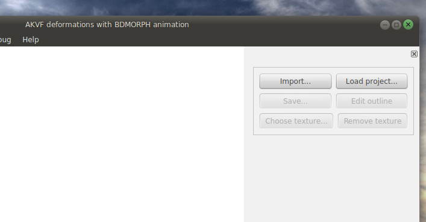

You start by creating new video project from some form of existing data.
You can start with existing planar mesh (in usual OBJ format) or from an picture.
in later case you will be be asked to draw the outline of object you want to animate.
Currently only one subject is supported, but in future versions you could use an picture that has more that one subject

Its also possible to create an new outline from scratch by doing File->Create model
Outline Editor
The editor is pretty basic so far, but good enough for the task.
To start left click on place where you want to put first vertex and it will became selected (green)
Everytime you click again, new edge will from from green vertex to new vertex.
An other vertex can be selected by clicking it.
The Create Mesh button invokes Triangle library to create De-Launchy triangiliation
of the polygon you had drawn.
You can use Mesh Density button to control the density of the resulting mesh